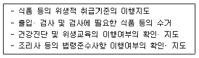

조리기능장 (2003-07-20 기출문제)
1과목: 임의 구분
1. Winslow가 말한 공중 보건학의 정의에 관한 3대 내용 중 맞는 것은?
- 질병예방, 생명연장, 신체적· 정신적 효율증진
- 육체적 효율증진, 질병치료, 생명연장
- 질병치료, 생명연장, 육체적· 정신적 효율증진
- 질병예방, 질병치료, 생명연장
(정답률: 70%)

2. 사람에게 가장 쾌적감을 주는 습도의 범위는?
- 10∼20%
- 20∼40%
- 40∼70%
- 70∼90%
(정답률: 73%)
3. 위생해충이 매개하는 질병의 연결이 잘못된 것은?
- 파리 - 장티푸스, 이질
- 모기 - 말라리아, 사상충증
- 바퀴벌레 - 콜레라, 장티푸스
- 쥐 - 뎅구열, 황열
(정답률: 75%)
4. 병실이나 오물통의 소독에 가장 적합한 것은?
- 석탄산수, 크레졸수
- 크레졸수, 자비소독
- 크레졸수, 증기소독
- 승홍수, 일광소독
(정답률: 64%)
5. 전염병의 병원체가 바이러스인 것은?
- 결핵
- 한센병
- 폴리오
- 발진티푸스
(정답률: 50%)
6. 병원체가 새로운 숙주에 침입하는 양식이 바르게 연결된 것은?
- 결핵 - 호흡기
- 발진티푸스 - 소화기
- 파상풍 - 호흡기
- 전염성 간염 - 점막피부
(정답률: 59%)
7. 회충의 예방대책과 거리가 먼 것은?
- 청정채소의 장려
- 민물고기 생식금지
- 파리구제 및 환경개선
- 분변관리
(정답률: 75%)
8. 사람의 체온이 42℃ 이상이 되면 어떤 장해가 일어나는가?
- 피부의 염증
- 산소중독증
- 신경조직의 기능마비
- 호흡기계 질환
(정답률: 64%)
9. 보건조직에서 공동의 목표 달성을 위한 행동통일의 수단에 해당되는 원칙은?
- 조정의 원칙
- 분업의 원칙
- 목적의 원칙
- 명령통일의 원칙
(정답률: 35%)
10. 고온작업장에서 발생되며 복사열을 운반하므로 열선이라고 하는 것은?
- 감마선
- 자외선
- 적외선
- 가시광선
(정답률: 60%)
11. 주방에서 식기류 등의 소독제로 사용하기에 적절한 것은?
- 승홍
- 생석회
- 포르말린
- 표백분
(정답률: 42%)
12. 런던(London)형 스모그(Smog)에 해당하는 것은?
- 주 사용연료는 석탄이다.
- 주로 여름철에 발생한다.
- 주성분은 질소산화물, 오존 등이다.
- 광화학적 반응에 의한다.
(정답률: 50%)
13. 식품위생의 가장 중요한 목적을 나타낸 것은?
- 식품의 영양가를 높이는데 있다.
- 식품의 제조기술을 개발하는데 있다.
- 식품의 안전성을 지키는데 있다.
- 식품의 증산에 기여한다.
(정답률: 70%)
14. 어떤 식품을 섭취하여 식중독이 발생되었다. 이 때 먹다남은 식품은 어떻게 하여야 하는가?
- 소독해서 버린다.
- 보관하였다가 역학조사 때 제공한다.
- 가축사료로 준다.
- 냉동보관한다.
(정답률: 89%)
15. 저온살균은 100℃ 이하의 온도로서 균의 일부만을 죽이는 방법이다. 다음 중 저온살균의 목적이 아닌 것은?
- 병원균만 죽이려고 할 때
- 높은 열처리를 하면 질을 손상시킬 우려가 있을 때
- 열에 약한 영양소의 파괴를 최소화 하고자 할 때
- 요구르트를 만들 때 필요한 발효를 시키기 위하여 스타터(starter)를 첨가할 때
(정답률: 48%)
16. 분변오염의 지표균 중 젖당을 발효하여 가스(gas)를 생성하며 그램음성 무아포 간균은?
- 장염비브리오균
- 대장균
- 살모넬라균
- 보툴리누스균
(정답률: 81%)
17. 식중독 유래균주가 특정 조건에서 사람과 토끼의 혈구를 용혈시킨다는 가나가와(神奈川)현상과 관계가 있는 식중독균은?
- 포도상구균
- 장염 비브리오균
- 보툴리누스균
- 살모넬라균
(정답률: 34%)
18. 감자의 발아부분과 녹색부위에 주로 존재하는 독성 물질은?
- 아미그달린(amygdalin)
- 무스카린(muscarine)
- 테트로도톡신(tetrodotoxin)
- 솔라닌(solanine)
(정답률: 79%)
19. 식기로 사용되는 플라스틱 제품 중 내열성이 약하고 장기간 사용시 표면이 침식되어 포름알데히드(formaldehyde)가 검출되는 것은?
- 페놀수지
- 요소수지
- 멜라민수지
- 아크릴수지
(정답률: 50%)
20. 물엿 등의 표백제로 사용했으나 현재 금지된 유해성 표백제는?
- 에틸렌 글리콜(ethylene glycol)
- 롱갈릿(rongalite)
- 둘신(dulcin)
- 오우라민(auramine)
(정답률: 62%)
2과목: 임의 구분
21. 다음 식품의 감별법 중 틀린 것은?
- 쇠고기는 투명한 적색을 띠고 냄새가 없어야 한다.
- 달걀은 동그랗고 광택이 있는 것이 좋다.
- 양파는 광택이 있고 중심부를 누를 때 단단해야한다.
- 양배추는 잘 결구되어 무겁고 광택있는 것이 신선한 것이다.
(정답률: 65%)
22. 다음과 같은 직무를 수행하는 사람은?

- 식품위생심의위원회 심의위원
- 영양사
- 시· 도지사
- 식품위생감시원
(정답률: 78%)
23. 다음 중 냉장고에 보관하기에 부적당한 식품은?
- 우유
- 쇠고기
- 생선
- 바나나
(정답률: 73%)
24. 직접 불에 굽는 구이 방법은?
- 스튜(stew)
- 브로일링(broiling)
- 디프플라이(deep-fry)
- 샐러맨더(salamander)
(정답률: 67%)
25. 장조림에 가장 적합한 부위는?
- 양지
- 목심
- 소머리
- 우둔
(정답률: 79%)
26. 다음 설명 중 양념을 넣는 시기로 가장 적당한 경우는?
- 생선조림을 할 때 비린내를 없애기 위해서는 설탕을 처음에 넣는다.
- 갈비찜을 부드럽게 하려면 양념 간장에 장시간 재워 두었다가 끓이도록 한다.
- 육류에 과일(토마토) 쥬스나 식초 등을 넣을 때에는 고기가 익은 후에 넣는다.
- 생선의 탕이나 조림에 된장, 고추장을 넣을 때에는 다른 조미료와 동시에 넣는다.
(정답률: 55%)
27. 다음 연결 중 7첩 반상은?
- 조치류 2가지 - 찬 5가지
- 조치류 1가지 - 찬 6가지
- 조치류 2가지 - 찬 7가지
- 조치류 없음 - 찬 9가지
(정답률: 84%)
28. 화이트 소스(White sauce)를 만들 때 루우(Roux)란 어느 것인가?
- 크림과 녹말가루를 섞어 놓은 것
- 버터와 녹말가루를 섞어 볶은 것
- 버터와 밀가루를 섞어 볶은 것
- 버터에 난황을 섞어 볶은 것
(정답률: 78%)
29. 맛있는 밥을 짓기 위해 가장 기본적이고 중요한 조건은?
- 솥의 크기와 쌀의 비율
- 물의 양과 단계적 불의 조절
- 쌀 씻기와 충분한 불리기
- 솥 바닥 면의 모양과 두께
(정답률: 69%)
30. 다음 중 만두 요리가 아닌 것은?
- 편수
- 난만두
- 규아상
- 주악
(정답률: 62%)
31. 지방을 많이 넣고 반죽한 크래커(cracker), 비스킷(biscuit) 등이 바삭바삭한 주된 이유는?
- 지방의 유화작용
- 지방의 산화작용
- 지방의 연화작용
- 지방의 강화작용
(정답률: 47%)
32. 국수를 삶을 때 삶는 물의 pH가 높으면 나타나는 현상은?
- 국수가 짜다.
- 전분 젤(gel)의 강도를 높인다.
- 국수에서 전분이 용출되어 국수의 표면을 거칠게 한다.
- 탄력을 증가시켜 질을 높여 준다.
(정답률: 64%)
33. 콜라겐(collagen)에 대한 설명이 잘못된 것은?
- 육류의 질긴부위는 결합조직이 많은데 우리가 먹는 부분의 결합조직은 콜라겐이다.
- 젤라틴을 더운물에 넣어 끓이면 콜라겐이 된다.
- 콜라겐은 아미노산이 결합된 폴리펩타이드 사슬이 3개가 서로 꼬여서 만들어진 것이다.
- 콜라겐은 물속에서 가열하면 첫단계로 수축한다.
(정답률: 74%)
34. 지방제한 식사나 무지방 식사에 이용이 가능한 육류의 조리형태는?
- 튀김
- 버터구이
- 볶음
- 편육
(정답률: 84%)
35. 육류의 사후강직 현상에 대한 설명이 맞는 것은?
- 근육내 pH가 증가하여 발생한다.
- 근육내의 효소에 의해 자가분해 되어 발생한다.
- 근육의 보수성이 최대로 증가한다.
- 강직 중에 있는 육은 가열조리하여도 연해지지 않고 질기다.
(정답률: 57%)
36. 비프 스테이크(Beef steak)의 구운 정도를 나타낸 용어와 거리가 먼 것은?
- moderate
- medium
- rare
- well-done
(정답률: 75%)
37. 냉동생선을 해동시 시간 여유가 있을 경우 가장 적당한 방법은?
- 30℃의 물에 담근다.
- 20℃의 실온에 방치한다.
- 20℃의 수도물에 담근다.
- 5℃의 냉장고에 둔다.
(정답률: 71%)
38. 어패류의 조리에 대한 설명 중 잘못된 것은?
- 생선조리시 우유를 사용하는 것은 영양강화 효과만 갖는다.
- 가시가 많은 준치 등에 식초를 넣어 약한 불에 오래 끓이면 뼈가 물러진다.
- 생선전은 지지는 과정에서 어취가 증발되는 효과를 가진다.
- 담수어는 해수어보다 특유의 어취를 가지므로 조리에 주의한다.
(정답률: 63%)
39. 게나 새우 등의 갑각류를 삶을 때 선명하게 붉은 색을 얻고 맛의 용출을 줄이기 위한 방법으로 가장 적당한 것은?
- 2%의 식초를 넣고 삶는다.
- 2%의 소금을 넣고 삶는다.
- 2%의 설탕을 넣고 삶는다.
- 2%의 소다를 넣고 삶는다.
(정답률: 68%)
40. 처음 담글 때 초록색 오이김치가 익으면서 점차 갈색으로 변하는 주원인은?
- 고추가루
- 마늘
- 발효로 형성된 산
- 파
(정답률: 75%)
3과목: 임의 구분
41. 식단작성의 목적이 아닌 것은?
- 가정경제에 알맞는 식품선택을 할 수 있다.
- 시간과 노력에 알맞는 식사관리를 할 수 있다.
- 구성원에게 매일 맛있는 음식과 육류를 제공한다.
- 좋은 식습관을 형성한다.
(정답률: 64%)
42. 육류를 손질하는데 사용되지 않는 것은?
- 슬라이서(slicer)
- 필러(peeler)
- 쵸퍼(chopper)
- 쏘우(saw)
(정답률: 82%)
43. 대량으로 음식을 조리하는 기기와 가장 거리가 먼 것은?
- Convection Oven
- Braising Pan
- Microwave Oven
- Steam Soup Kettle
(정답률: 43%)
44. 다음의 주방설비 중 가장 잘 설계된 것은?
- 육류 기름을 바로 배출할 수 있도록 발밑에 트렌치를 설치하였다.
- 주방바닥이 배수관 쪽으로 1/2인치 가량 경사지도록 하였다.
- 업무의 효율을 높이기 위해 조리구역과 기물세척 구역을 함께 설치하도록 설계하였다.
- 작업동선을 짧게 하기 위해 준비대 - 개수대 - 가열대 - 조리대 - 배선대 순으로 배치하였다.
(정답률: 38%)
45. 조리장을 신축 또는 개조할 경우 가장 먼저 고려해야 할 사항은?
- 위생
- 경제
- 외관
- 능률
(정답률: 60%)
46. 다음 원가의 종류 중 총원가는?
- 직접원가에 제조간접비를 추가한 원가
- 제품의 제조원가에 판매관리비, 이익을 추가한 원가
- 특정제품에 직접 부담시킬 수 있는 원가
- 제품의 제조원가에 판매관리비를 추가한 원가
(정답률: 48%)
47. 판매 촉진을 위해 PR 활동이 큰 경우에는 판매가격이 높게 결정된다. 가격 결정에 직접적인 영향을 준 것은?
- 심리적 요인
- 경쟁업체의 가격
- 마케팅의 전략
- 유통과정의 마진
(정답률: 45%)
48. 폐기율이 65%인 생선으로 100인분의 구이를 만들려고 한다. 1인분의 실제 사용량을 80g으로 했을 때 얼마만큼의 생선을 주문해야 하는가?
- 22.9㎏
- 12.3㎏
- 5.2㎏
- 2.8㎏
(정답률: 54%)
49. 원가계산 실시의 시간적 단위를 원가계산기간이라 하는데 일반적으로 원칙적인 기간은 얼마 동안인가?
- 1개월
- 3개월
- 6개월
- 12개월
(정답률: 55%)
50. 고정자산으로 인하여 발생하는 원가계산요소는?
- 재료비
- 소모품비
- 감가상각비
- 관리비
(정답률: 64%)
51. 습열조리의 설명 중 가장 맞는 것은?
- 마른국수를 삶을 경우에는 적은 량의 물에 면을 같이 넣고 끓여야 전분이 빨리 호화되어 바람직하다.
- 육류를 데칠 때에는 지미성분의 용출을 막기 위해 처음부터 물에 담가 끓인다.
- 데칠 때는 식품이 잠길 정도의 물을 붓고 실온에서 가열하는 것이 좋다.
- 녹색야채는 데치는 시간이 길어지면 녹색의 페오피틴 색소가 갈색의 클로로필이 되어 색깔이 나빠지므로 바람직하지 않다.
(정답률: 50%)
52. 양질의 단백질이 가장 많은 것은?
- 쌀
- 콩
- 쇠고기
- 채소
(정답률: 56%)
53. 식초나 과일의 신맛에 대한 설명 중 잘못된 것은?
- 신맛의 정도는 수소이온 농도인 pH와 정비례 한다.
- 신맛의 정도는 수소이온 농도인 pH와 정비례하지 않는다.
- 같은 pH에서도 유기산은 무기산보다 신맛이 더 강하게 느껴진다.
- 식초는 당질에 초산균이 작용하여 생성된 4-5%의 초산용액이다.
(정답률: 24%)
54. 전분입자가 가장 큰 것은?
- 옥수수
- 감자
- 밀
- 쌀
(정답률: 48%)
55. 한천(agar)에 대한 설명으로 잘못된 것은?
- 한천은 우뭇가사리 등의 홍조류에서 추출된 다당류이다.
- 한천은 고열량식품으로 많이 이용되고 있다.
- 한천은 여러가지의 응고제, 젤리. 과자 등의 제조, 미생물 배양배지 등에 이용된다.
- 한천은 동결해동법(freezing-thawing technique)을 이용하여 만든다.
(정답률: 69%)
56. 우엉의 갈변을 억제시키기 위한 방법이 아닌 것은?
- 비타민 C 첨가
- 아황산염 첨가
- 구연산 첨가
- 산소첨가
(정답률: 53%)
57. 곶감 제조시 과육내 탄닌 물질이 갈변하는 현상을 막기위해 하는 공정은?
- 훈증
- 건조
- 포장
- 박피
(정답률: 38%)
58. 과일의 CA(controlled atmosphere) 저장 조건에서 기체 조성을 어떻게 변화시키는가?
- 산소의 증가
- 이산화탄소의 증가
- 질소의 증가
- 에틸렌가스의 감소
(정답률: 43%)
59. 햄, 소시지의 색소로 옳은 것은?
- 미오글로빈(myoglobin)
- 옥시미오글로빈(oxymyoglobin)
- 니트로소미오글로빈(nitrosomyoglobin)
- 메트미오글로빈(metmyoglobin)
(정답률: 48%)
60. 생과자의 장식용이나 과일과 함께 디저트용으로 주로 이용되는 크림은?
- 라이트 크림(light cream)
- 버터 크림(butter cream)
- 휘핑 크림(whipping cream)
- 플라스틱 크림(plastic cream)
(정답률: 71%)